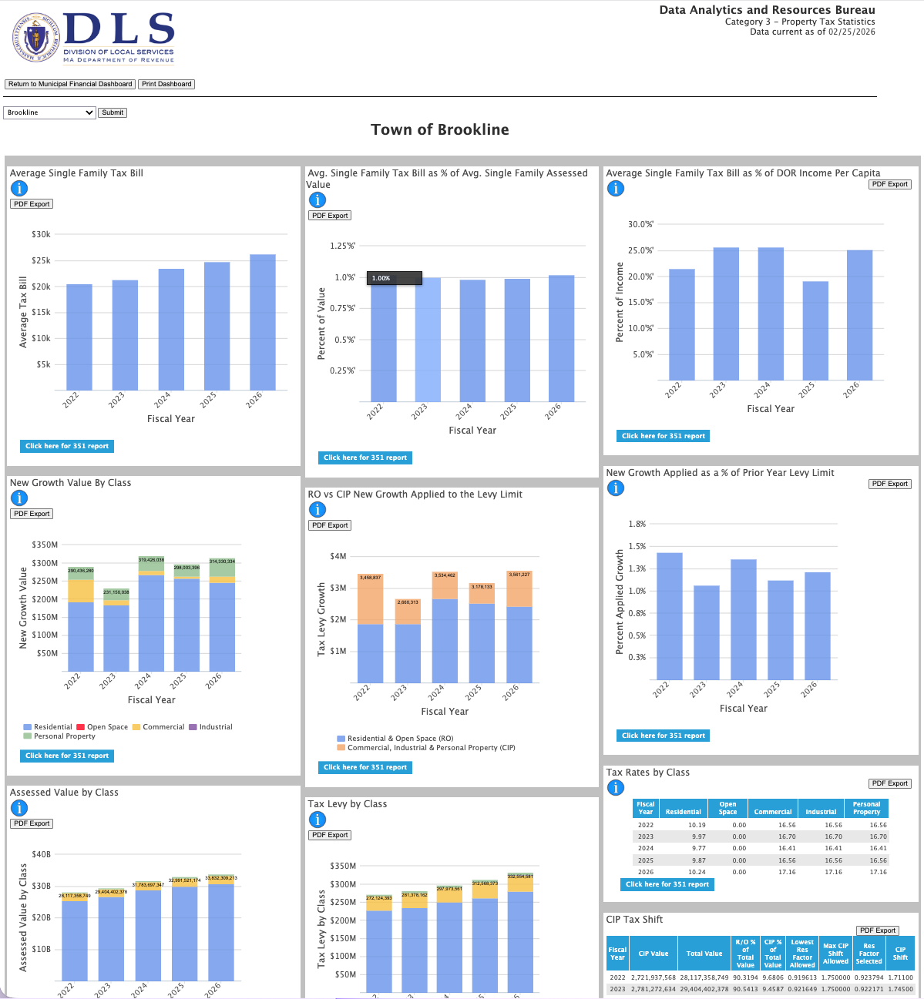
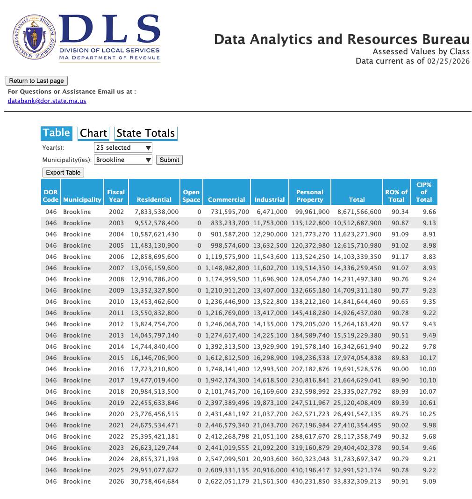
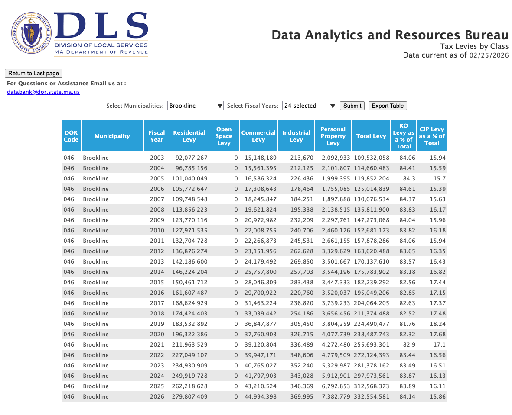
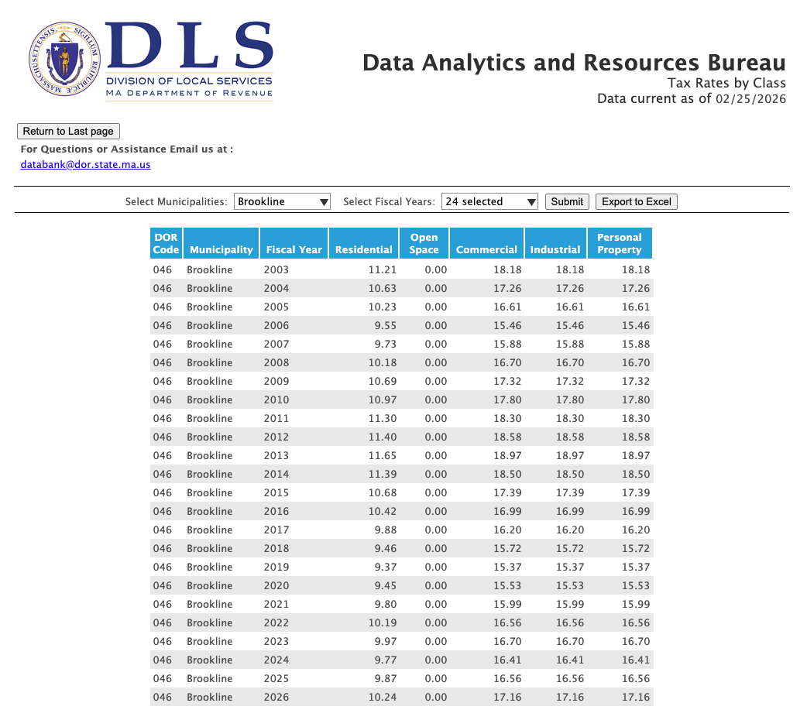
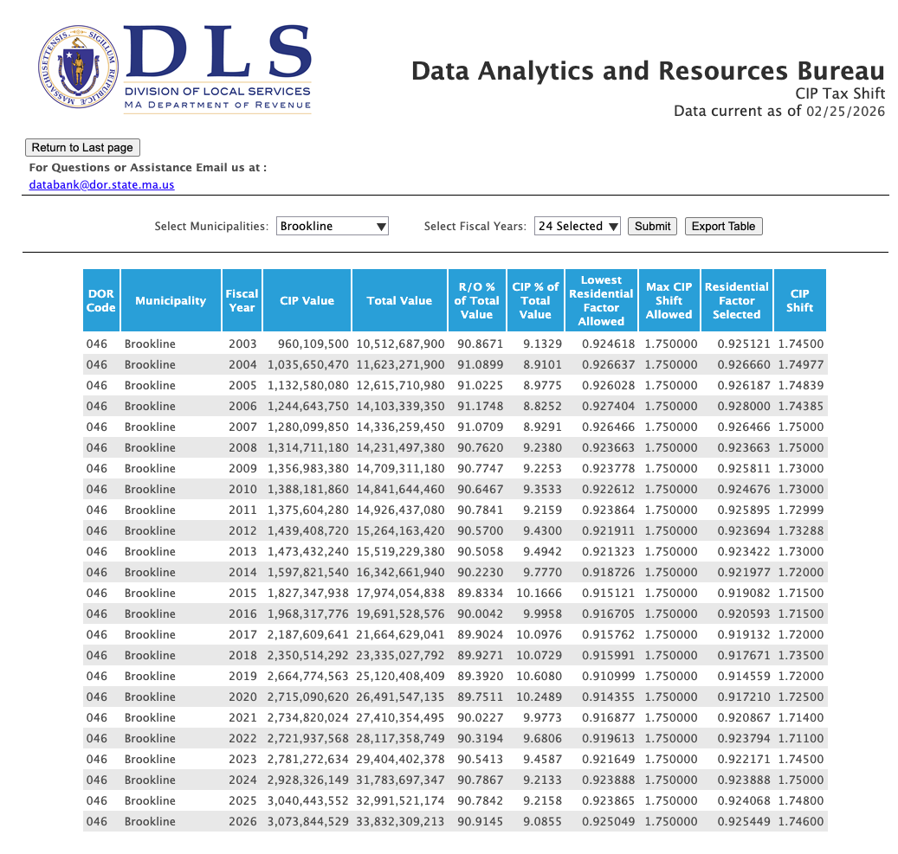
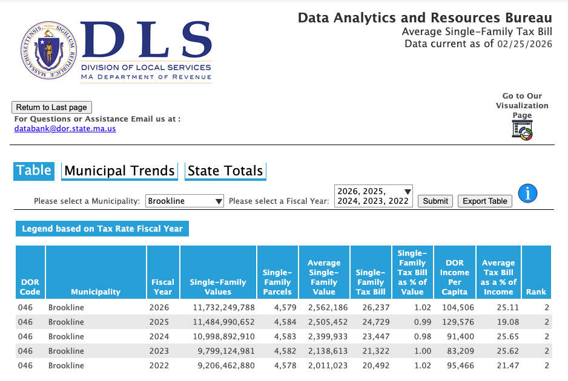

DLS data for Property Tax Statistics
This website has annual assessment and tax revenue data for Brookline (and all other MA communities). All data can be exported to Excel.
The Massachusetts Department of Revenue, Division of Local Services (DLS) Website for Property Tax Statistics: Open DLS Property Tax Statistics Dashboard

Assessed Values for Brookline (2002-2026). Brookline typically has more than 90% of its assessed value in Residential.

Tax Levies for Brookline (2002-2026). Residential levy is usually about 82-84% of the total levy.

Tax Rates By Class for Brookline (2002-2026). Residential tax rates are $10.24 (per $1K). Other tax rates (CIP) are $17.16.

CIP Tax Shift for Brookline (2002-2026). CIP stands for Commercial, Industrial, and Personal (everything aside from Residential and Open Space). The Select Board chooses a Residential Factor each year, which determines how low the residential tax rate can be compared to CIP tax rates (known as the CIP Shift). Typically this is close to the legal limit of 1.75.

Average Single Family Tax Bill (2022-2026).
